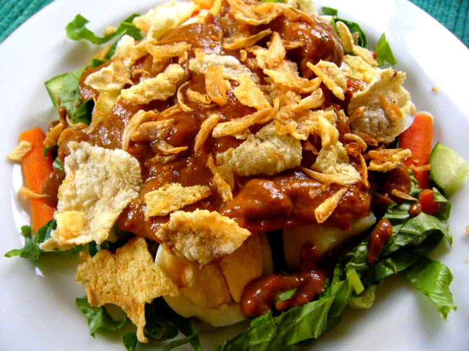

Gado Gado

Indonesian Gado Gado is an incredibly tasty and healthy
salad that is both crunchy and soft.
Ingredients
- Enak Eco Bumbu Gado Gado Instant
peanut salad dressing
- 250 grams Mungbean sprouts
- 250 grams Spinach
- 1 Cucumber
- Firm Tofu at least 450 grams
- 4 Eggs
- Kerupuk (Indonesian Crackers)
- (Optional) Crunchy Peanut Butter
- (Optional) Kecap Manis (Sweet Soy Sauce)
Steps
Preparing the Ingredients
- Boil a full kettle of water.
- Boil eggs for 10 mins to get
hard-boiled eggs.
- Blanch beansprouts and spinach
separately for at least 1 min.
- Slice tofu into nice small rectangles.
- Deep Fry your Kerupuk if you bought raw.
Making the sauce
- Follow instructions on the sauce pack.
- Add peanut butter and kecap manis to taste.
Serving the Gado Gado
- Serve with each ingredient on a big plate.
- Grab a small plate and take a
bit of each ingredient.
- Take a big spoonful of the sauce.
- Mix and enjoy with Kerupuk.